18/11/2019 Beginnen aan het steigerhout-gamma.
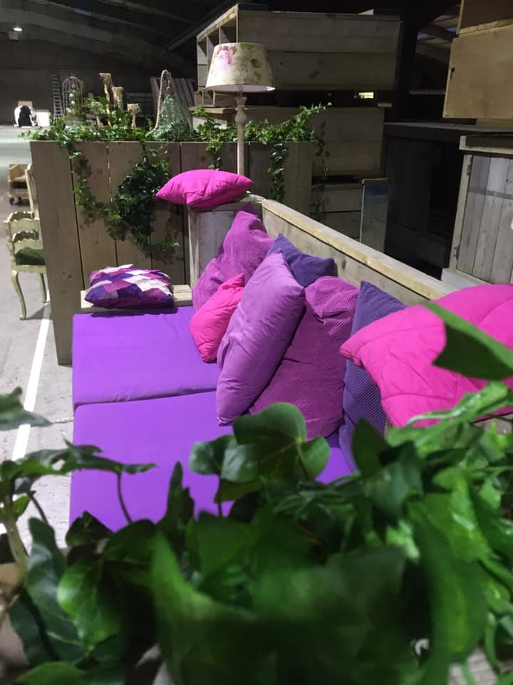18/11/2019 Beginnen aan het Thema 'Ibiza Lounge'
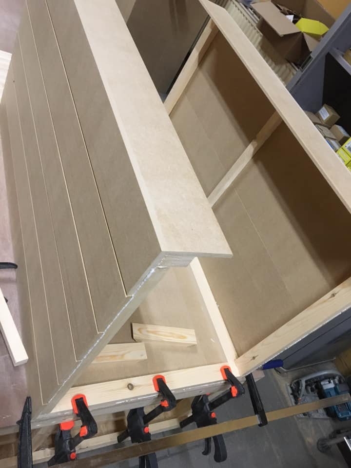10/11/2019 Act 10 - The making of … Double MP 2.0
Tenth act: a little bit of everything, 24/7, started the day after that devastating fire, extremely helped by our wonderful family and friends … dedicated to come back more powerful than before
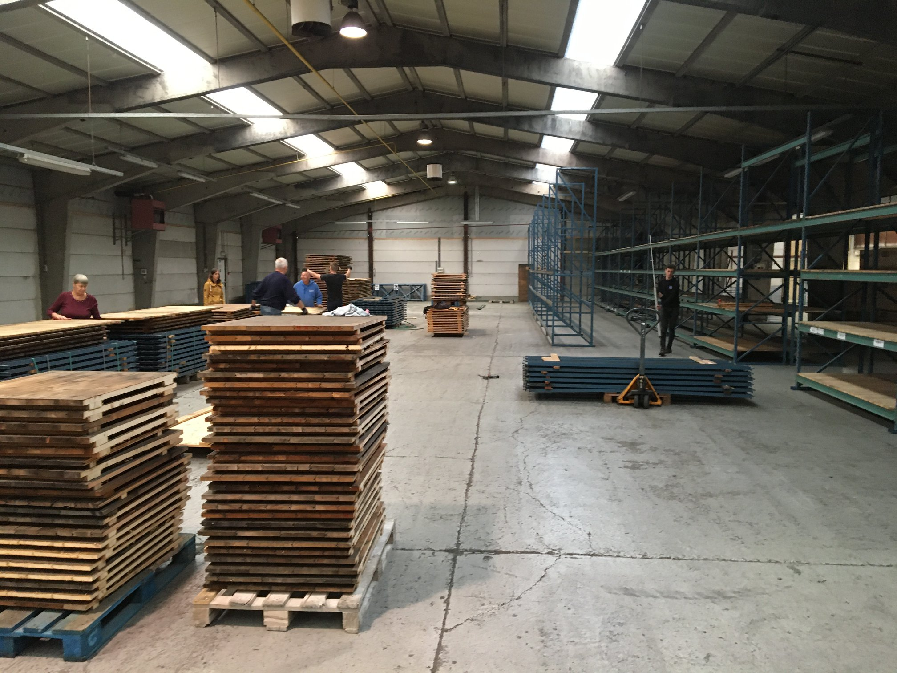10/11/2019 Act 9 - The making of … Double MP 2.0
Nineth act: creating a wide variety of chairs, high tables, bar chairs to please and serve our customers
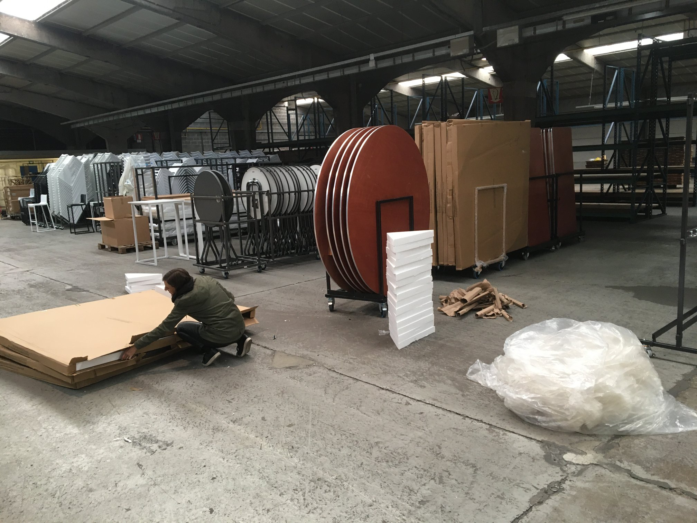10/11/2019 Act 8 - The making of … Double MP 2.0
Eighth act: making the small decorations that made us great in the past
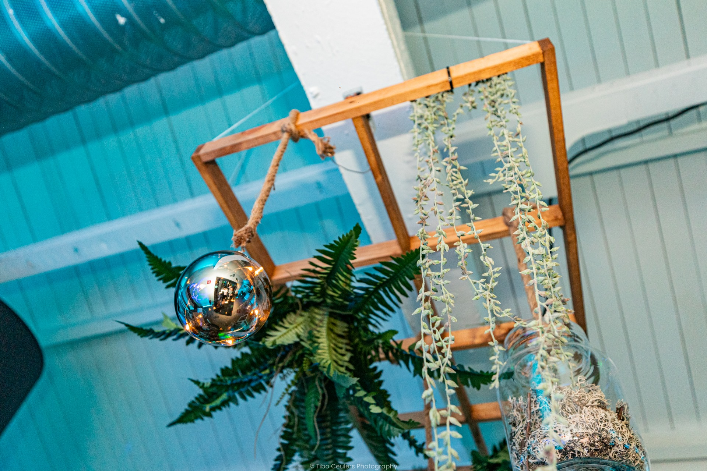10/11/2019 Act 7 - The making of … Double MP 2.0
Seventh act: creating a scaffold wood lounge - sanding, polishing, painting, …
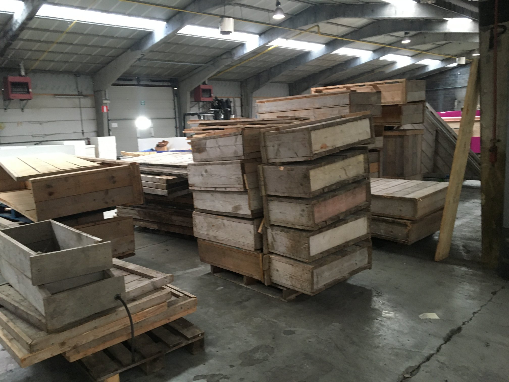10/11/2019 Act 6 - The making of … Double MP 2.0
Sixth act: rebuilding everything we created ourselves to work more comfortably during those 15 years
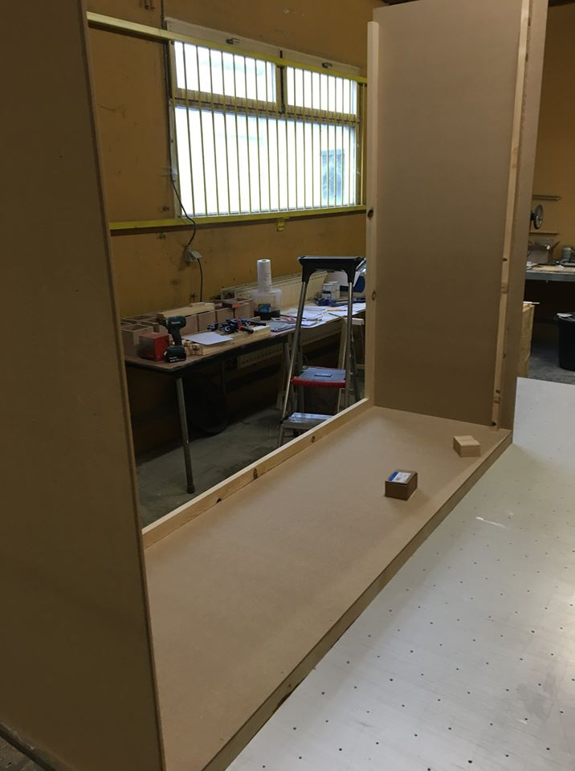10/11/2019 Act 5 - The making of … Double MP 2.0
Fifth act: creating a whole lot of storage room
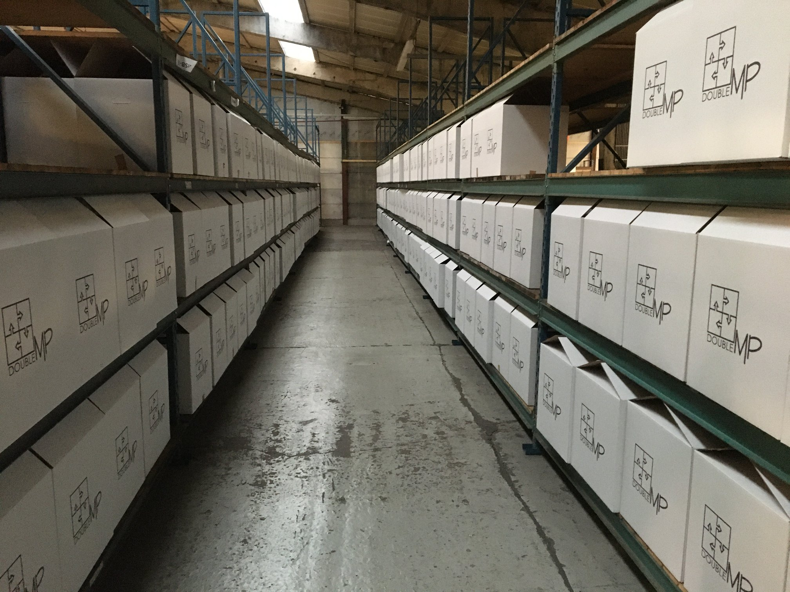10/11/2019 Act 4 - The making of … Double MP 2.0
Fourth act: rebuilding our 45 decoration themes. Five done, 40 to go...
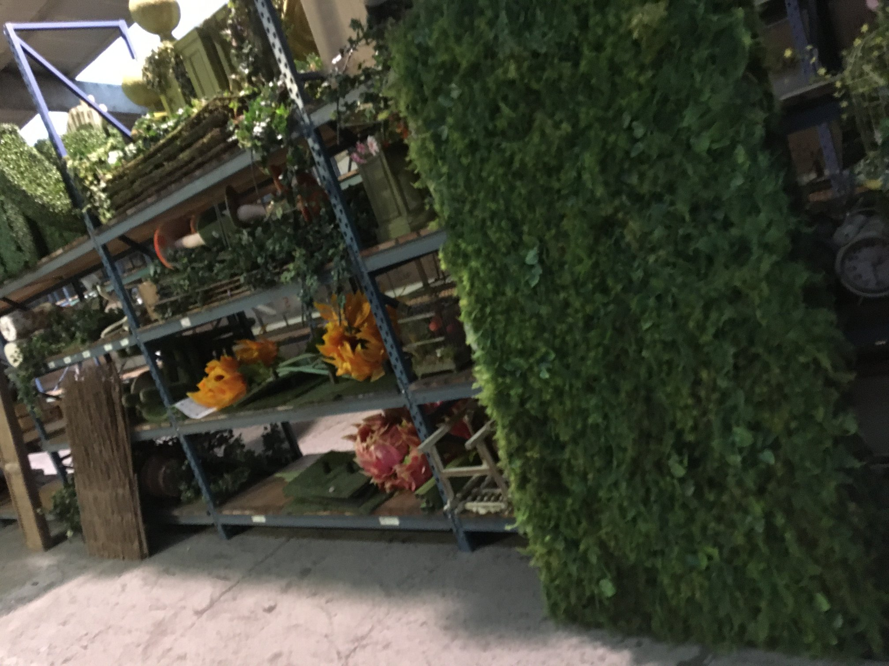10/11/2019 Act 3 - The making of … Double MP 2.0
Third act: creating a wide variety of lounge furniture - in all shapes, sizes, colours and fabrics
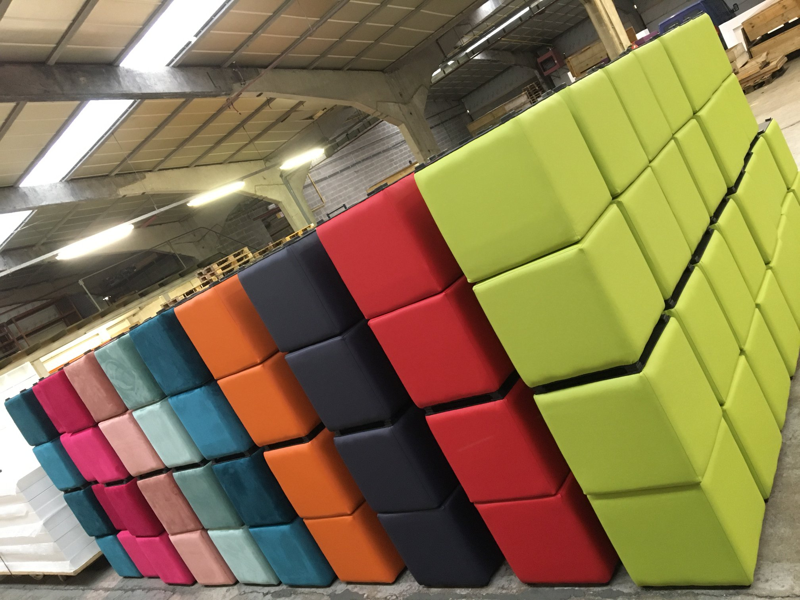10/11/2019 Act2 - The making of … Double MP 2.0
Second act: remaking our Ibiza lounge settings
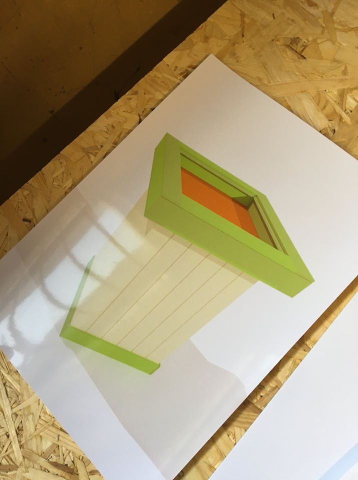10/11/2019 Act1 - The making of … Double MP 2.0
First act: the making of a large new series of lounge furniture - the Winter Wonderland stylish white lounge with led
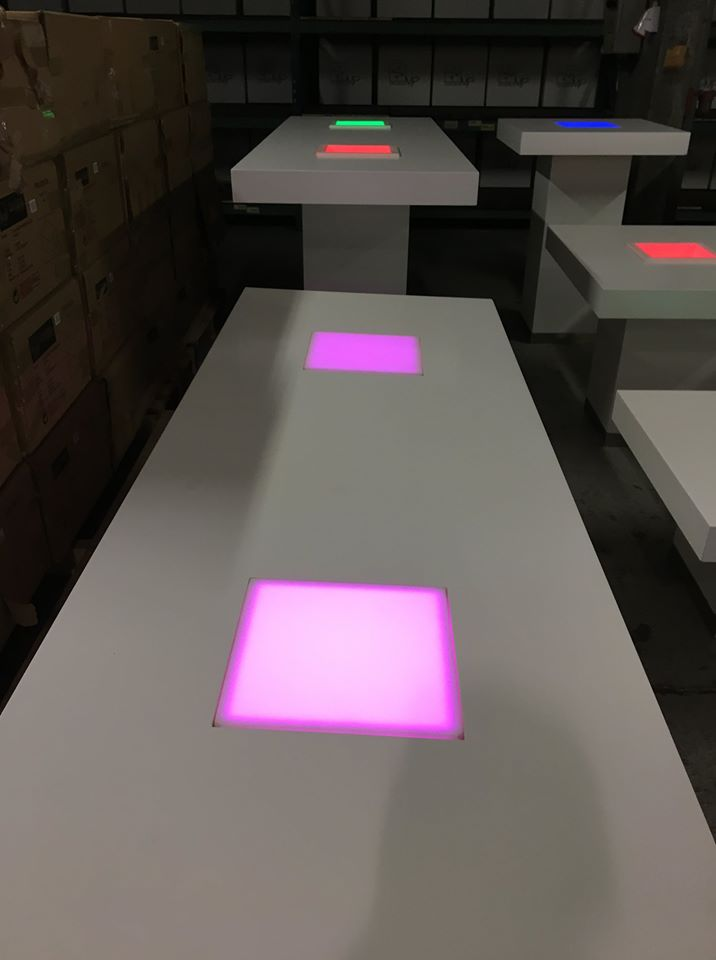